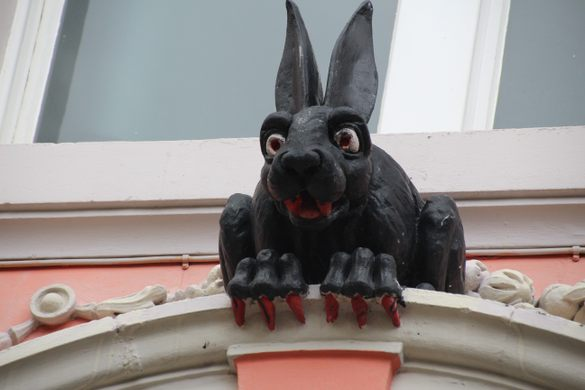
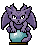

Cyborg Cathedral
grotesques & gargoyles

adopt me!

<a href="https://cyborg-cathedral.neocities.org/grotesques-and-gargoyles.html"><img src="https://cyborg-cathedral.neocities.org/assets/adoptables/gargoyle.gif" alt="stone gargoyle" width="74" height="96"></a>
copy
confess your sins
✕
300 left
confess
previous confessions